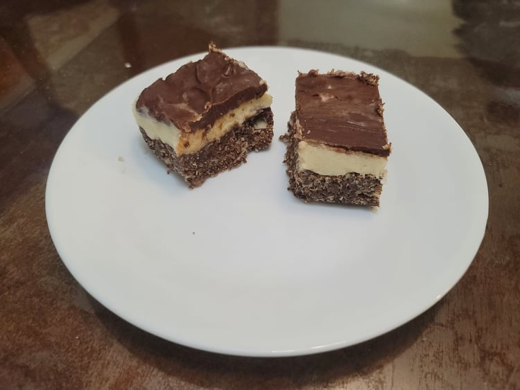

Nanaimo Bars

Ingredients:
First Layer:
- 1/2 cup Unsalted butter
- 5 tbsp Cocoa powder, 30 g
- 1/4 cup Sugar, 50 g
- 1/8 tsp Salt
- 1 Egg, beaten
- 1 3/4 cup Graham crackers, powdered, 180 g
- 1/2 cup Almonds, finely chopped, 75 g
- 1 cup Shredded coconut, 80 g
Second Layer:
- 1/2 cup Unsalted butter, softened
- 3 tbsp Heavy cream
- 2 Tbsp Bird's custard powder, OR substitute 1/4 cup Powdered milk + 1 tsp Vanilla
- 1 3/4 cups Powdered sugar, 210 g
Third Layer:
- 4-6 oz Semi-sweet chocolate, chopped
- 2-3 tbsp Unsalted butter
Instructions:
- Grease an 8x8 inch baking dish. Line with parchment paper and set aside.
- Prepare a double boiler and begin to melt the butter in it. Once melted, remove from the heat and whisk in the cocoa powder, sugar, and salt. While whisking continuously, pour in the egg.
- Return the bowl to the heat and whisk until thickened. Remove from the heat again.
- Mix in the graham crackers, almonds, and coconut until thoroughly combined. Press the mixture into the baking dish in an even layer. Place into a freezer while preparing the next layer.
- Whisk together the heavy cream and the custard powder or powdered milk with vanilla until completely combined. Then add in the butter and sugar and beat with an electric hand mixer until very light and fluffy.
- Spread the mixture into an even layer over the first layer. Chill in the freezer until frozen before preparing the final layer.
- Melt and combine the chocolate and butter in a double boiler. Then quickly spread it evenly over the second layer. Let chill until the chocolate has set.
- Remove from the baking pan and cut into squares to serve.